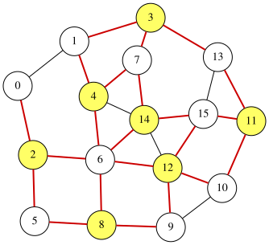

Max-Cut Problem
Given an undirected graph $G=(V,E)$, the Max-Cut problem aims to partition the node set $V$ into two disjoint subsets $S$ and $\overline{S}$ so that the number of edges in $E$ that have one endpoint in $S$ and the other in $\overline{S}$ is maximized.
Assume that the nodes are labeled $0,1,\ldots,n-1$. We introduce $n$ binary variables $x_0, x_1, \ldots, x_{n-1}$, where $x_i=1$ if and only if node $i$ belongs to $S$ ($0\le i\le n-1$). Then, the number of edges crossing the cut $(S,\overline{S})$ is given by
\[\begin{aligned} \text{objective} &= \sum_{(i,j)\in E}\Bigl(x_i(1-x_j) + (1-x_i)x_j\Bigr). \end{aligned}\]Since the QUBO problems aims to minimize an objective function, we obtain a QUBO expression $f$ by negating the objective:
\[\begin{aligned} f &= -\,\text{objective}. \end{aligned}\]An optimal assignment minimizing $f$ corresponds to a maximum cut of $G$. Moreover, the value of $\text{objective}$ equals the number of edges crossing between $S$ and $\overline{S}$.
QUBO++ program for the MAX-CUT problem
Based on the formulation above, the following QUBO++ program constructs the QUBO expression $f$ for a 16-node graph and solves it using the Exhaustive Solver:
#include "qbpp.hpp"
#include "qbpp_exhaustive_solver.hpp"
#include "qbpp_graph.hpp"
int main() {
const size_t N = 16;
std::vector<std::pair<size_t, size_t>> edges = {
{0, 1}, {0, 2}, {1, 3}, {1, 4}, {2, 5}, {2, 6}, {3, 7},
{3, 13}, {4, 6}, {4, 7}, {4, 14}, {5, 8}, {6, 8}, {6, 12},
{6, 14}, {7, 14}, {8, 9}, {9, 10}, {9, 12}, {10, 11}, {10, 12},
{11, 13}, {11, 15}, {12, 14}, {12, 15}, {13, 15}, {14, 15}};
auto x = qbpp::var("x", N);
auto objective = qbpp::toExpr(0);
for (const auto& edge : edges) {
objective += x[edge.first] * (1 - x[edge.second]) +
(1 - x[edge.first]) * x[edge.second];
}
auto f = -objective;
f.simplify_as_binary();
auto solver = qbpp::exhaustive_solver::ExhaustiveSolver(f);
auto sol = solver.search();
std::cout << "objective = " << objective(sol) << std::endl;
qbpp::graph::GraphDrawer graph;
for (size_t i = 0; i < N; ++i) {
graph.add_node(qbpp::graph::Node(i).color(sol(x[i])));
}
for (const auto& e : edges) {
auto edge = qbpp::graph::Edge(e.first, e.second);
if (sol(x[e.first]) != sol(x[e.second])) {
edge.color(1).penwidth(2.0);
}
graph.add_edge(edge);
}
graph.write("maxcut.svg");
}
This program creates the expressions objective and f, where f is the negation of objective.
The Exhaustive Solver minimizes f, and an optimal assignment is stored in sol.
To visualize the solution, a GraphDrawer object graph is created and populated with nodes and edges.
In this visualization, nodes $i$ in S (i.e., those with $x_i=1$) are colored, and edges crossing the cut are highlighted.
This program prints the following output:
objective = 22
The resulting graph is rendered and stored in the file maxcut.svg:
